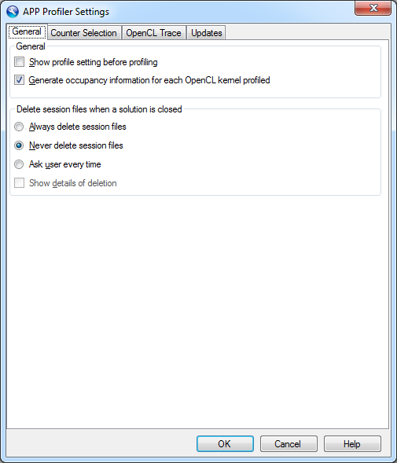

This page allows you to configure some general profiler settings.

- Show profile setting before profiling When checked, the APP Profiler Session Parameters dialog will be shown before each profile session, allowing you to view and edit the project settings that will used for profiling. When unchecked, the settings dialog will only be shown if the profiler is unable to get enough information from the project to initiate a profile session.
- Generate occupancy information for each OpenCL kernel profiled When checked, the profiler will generate kernel occupancy data for each OpenCL™ kernel dispatched to a GPU device. This setting affects both Performance Counter mode and Application Trace mode.
- Delete session files when a solution is closed This setting allows you to tell the profiler to automatically delete all files and directories related to sessions that belong to projects in a solution when that solution is closed in Visual Studio.
| Setting | Description |
| Always delete session files | The profiler will automatically delete session files when a solution is closed |
| Never delete session files | The profiler will not delete session files when a solution is closed |
| Ask user every time | The profiler will display a prompt when a solution is closed, asking the user if session files should be deleted |
If the option is set to Always delete session files or Ask user every time, you can also enable Show details of deletion. When enabled, the profiler will display a dialog, showing all the files and directories which were deleted as well an any errors that occurred when trying to delete files or directories.